Mon Voisin Totoro
Titre original : Tonari no Totoro
Date de sortie : 1988
Durée : 1h 26min
Évaluation IMDB : 8,1/10
Réalisation et scénariste : Hayao Miyazaki
Mei, 4 ans, et Satsuki, 10 ans, s’installent à la campagne avec leur père pour se rapprocher de l’hôpital où séjourne leur mère. Elles découvrent la nature tout autour de la maison et, surtout, l’existence d’animaux étranges et merveilleux, les Totoros, avec qui elles deviennent très amies. Un jour, alors que Satsuki et Mei attendent le retour de leur mère, elles apprennent que sa sortie de l’hôpital a été repoussée. Mei décide alors d’aller lui rendre visite seule. Satsuki et les gens du village la recherchent en vain. Désespérée, Satsuki va finalement demander de l’aide à son voisin Totoro.
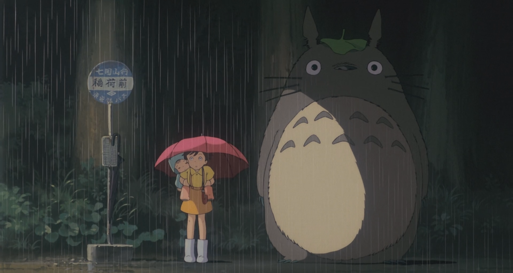
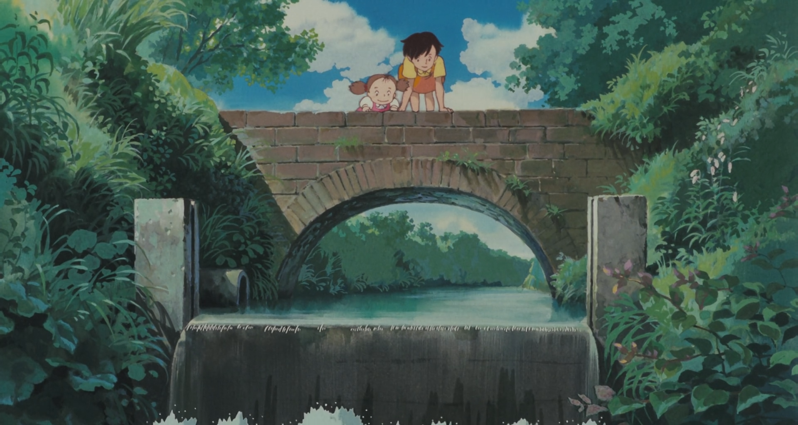
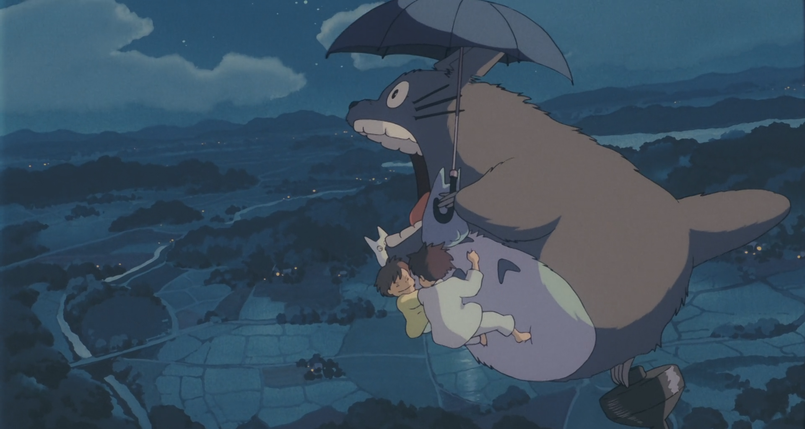
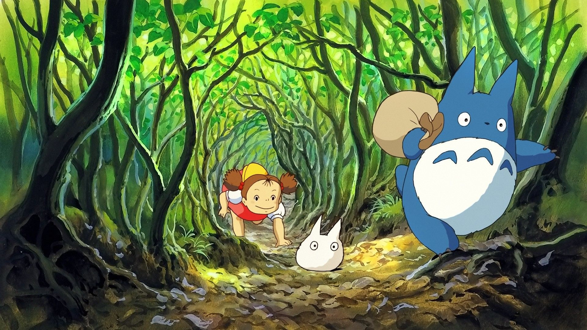
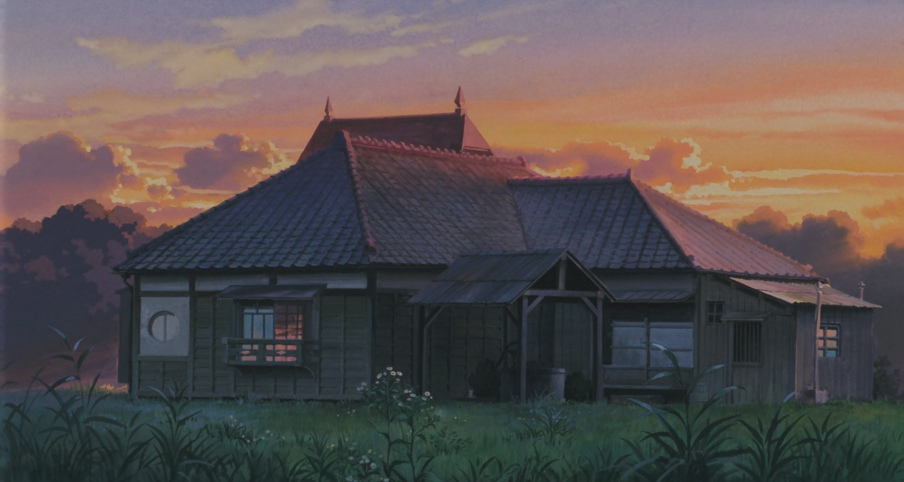
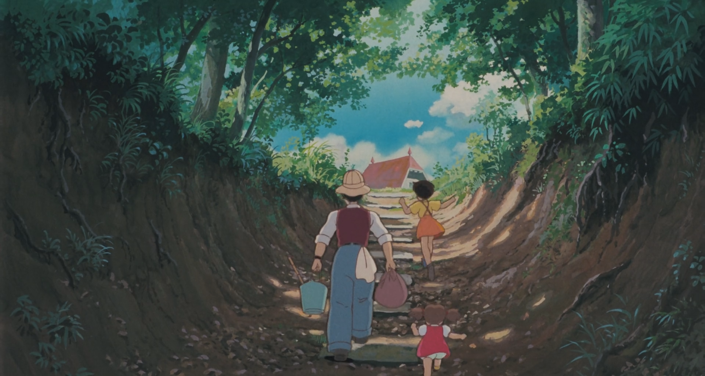
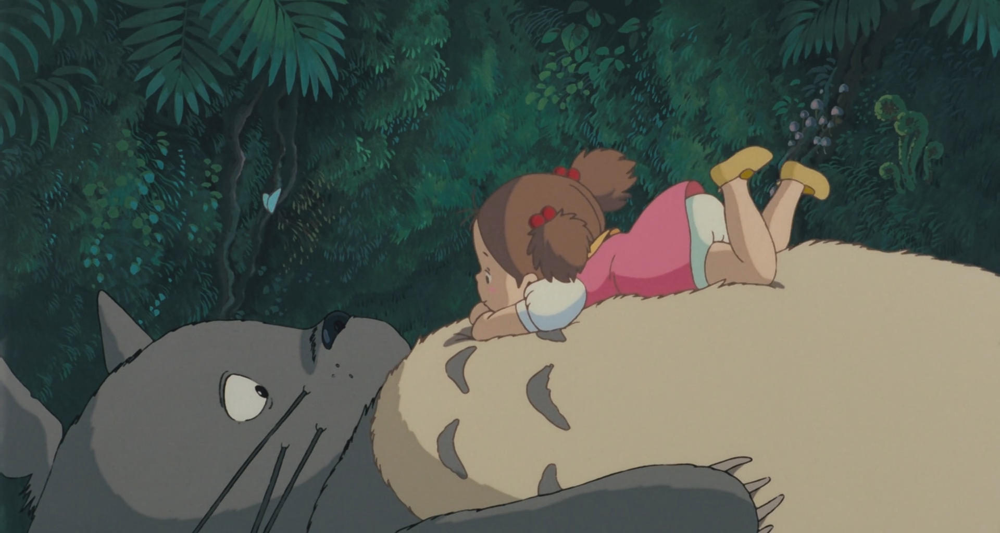
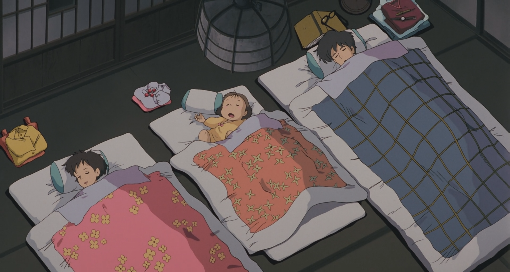
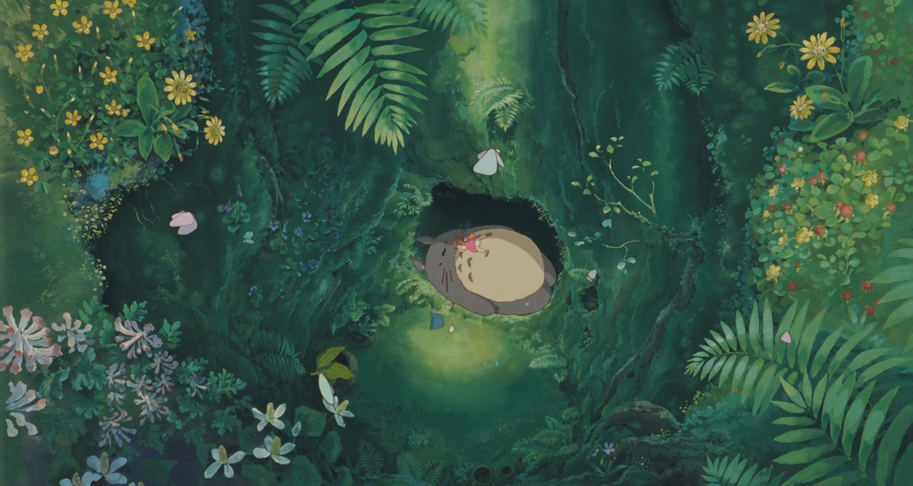
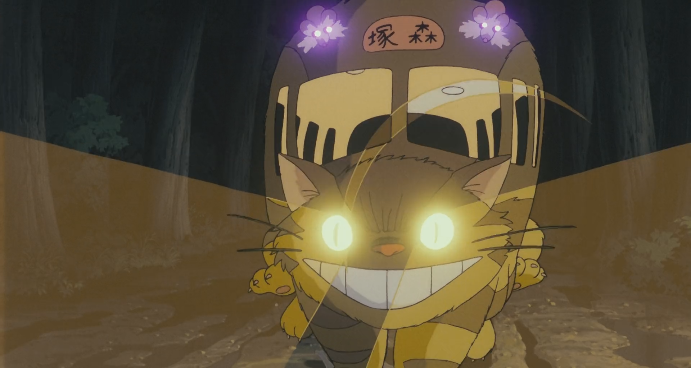
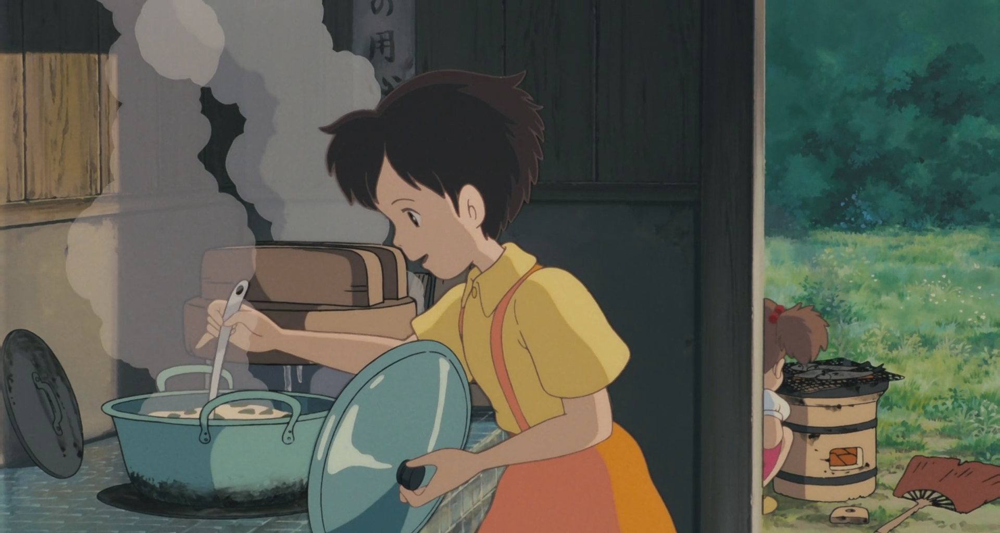
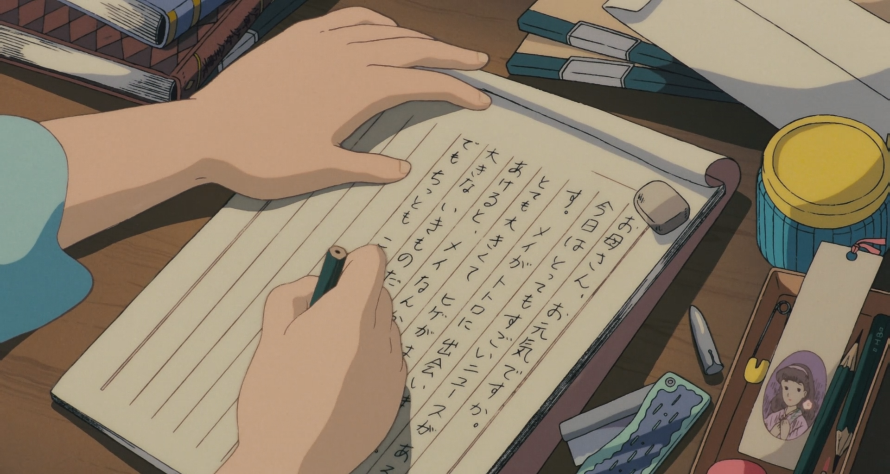
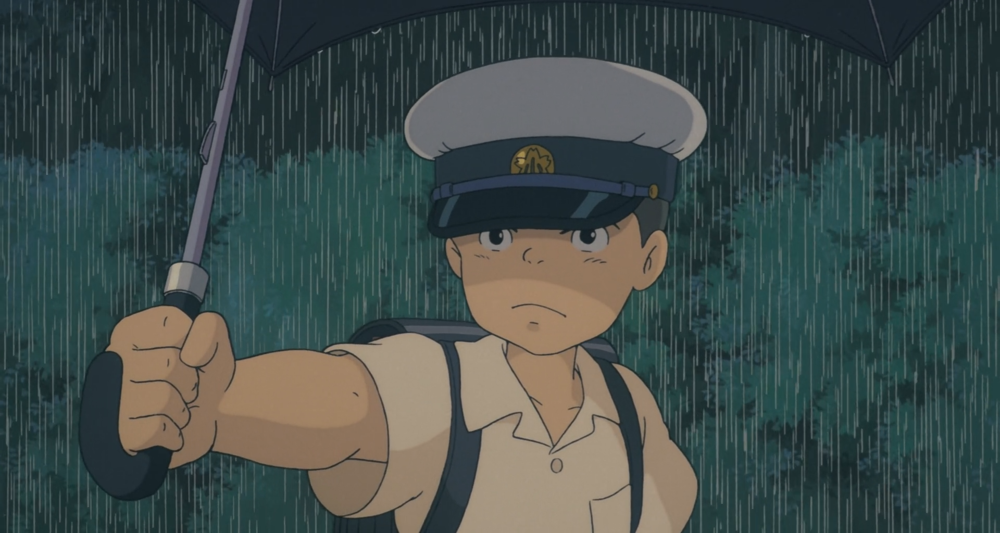
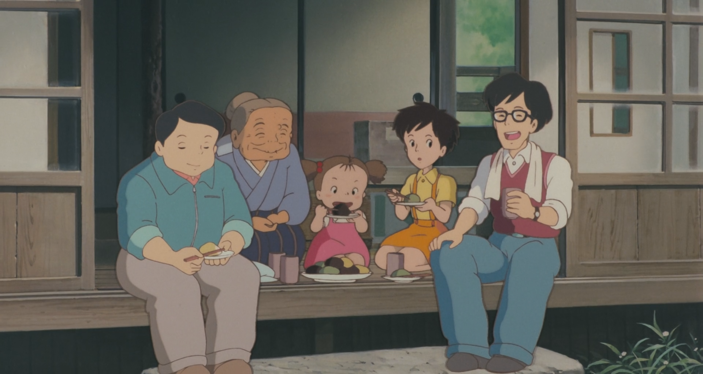
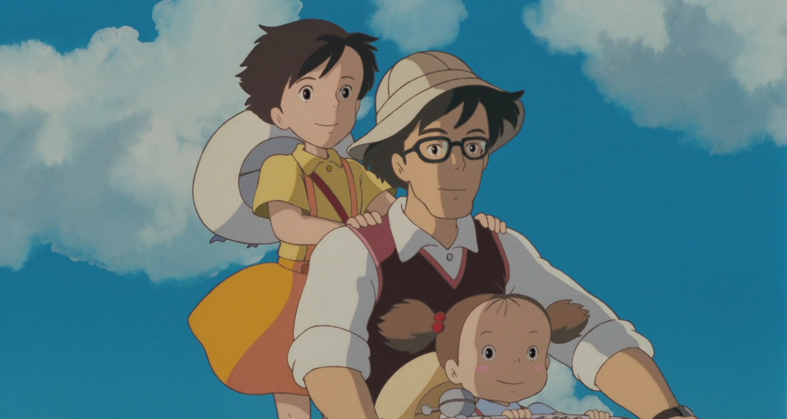
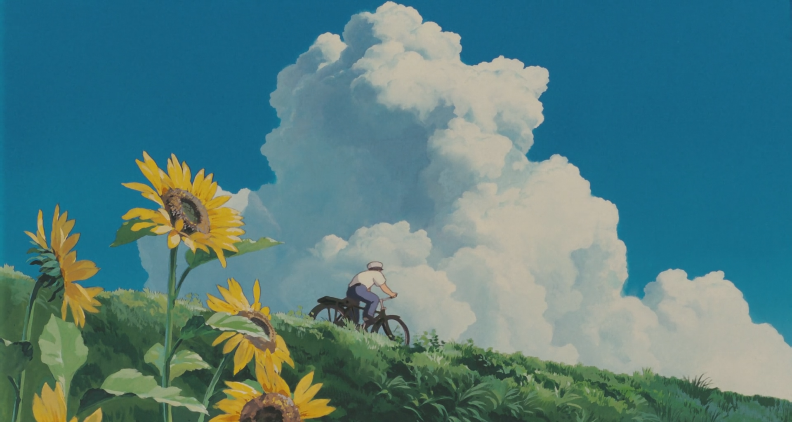